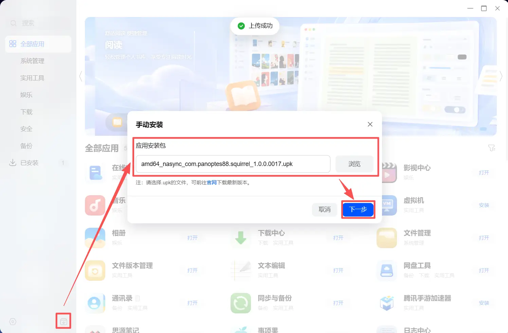
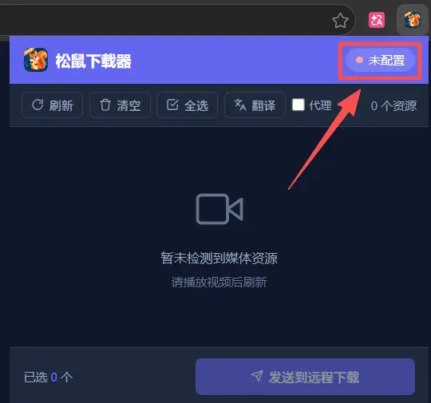
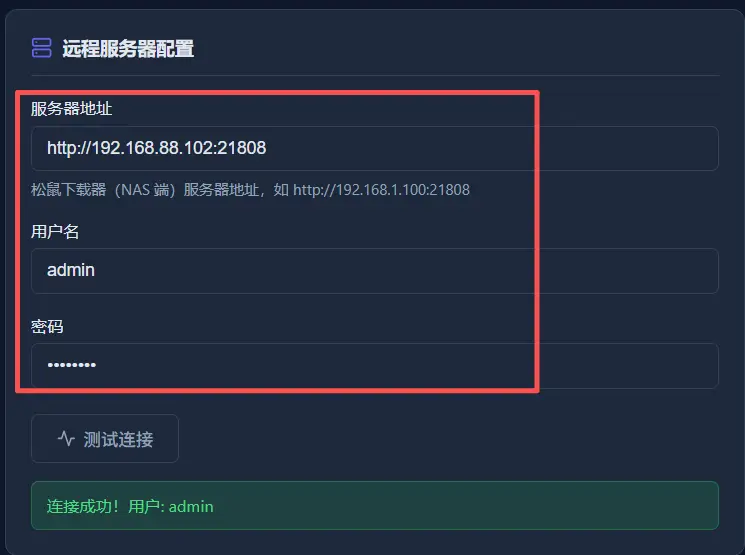
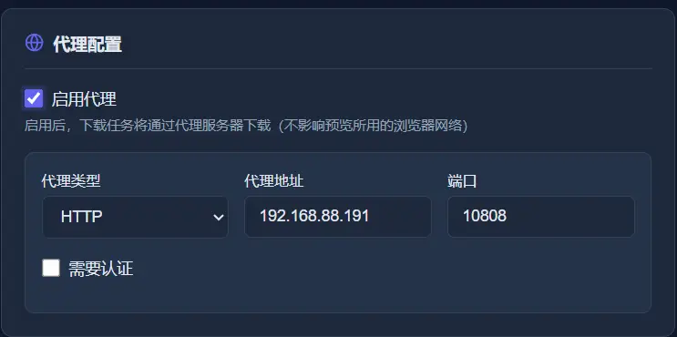
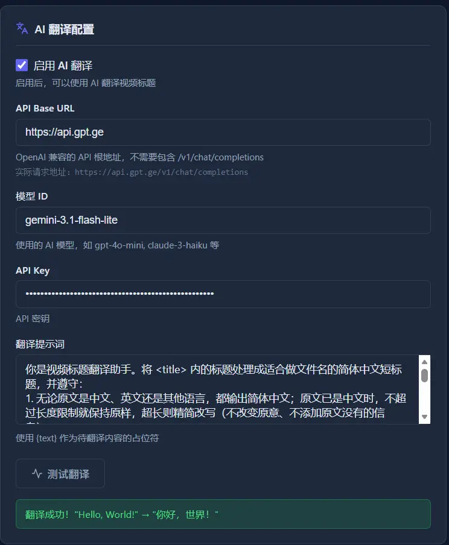
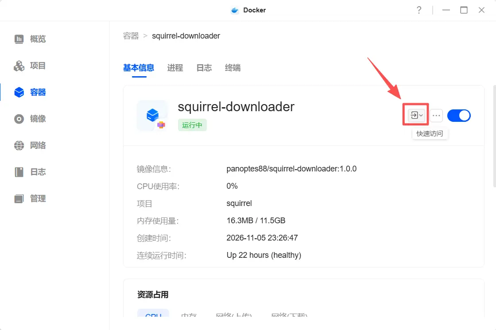
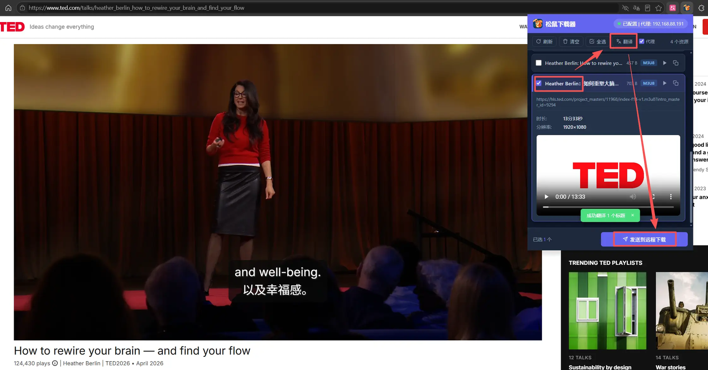
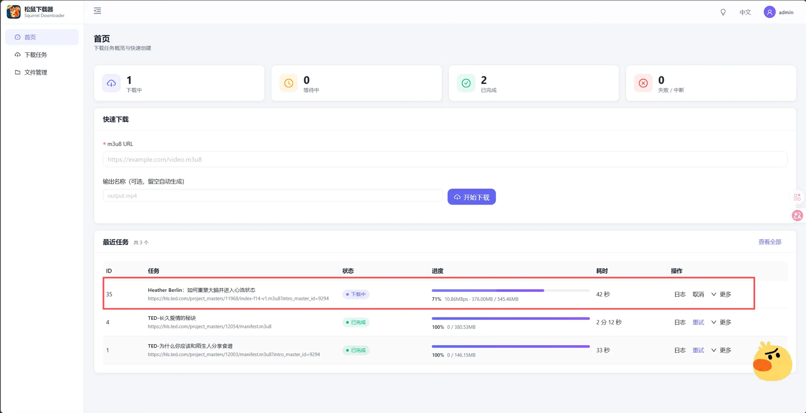

在自己 NAS 上
下载与管理视频
把网页视频链接粘贴进来，应用在本地完成分片下载、自动选择最佳音视频流并合成为 MP4， 存入你指定的 NAS 目录。所有数据只留在自己的设备上。
本地下载
分片并发下载，自动合并音视频，无需上传到第三方
实时进度
下载速度、剩余时间、完整日志，随时可查
文件管理
缩略图、在线播放、排序筛选、批量删除
浏览器插件
网页上嗅探视频流，一键发送到 NAS
01安装松鼠下载器
两种安装方式任选其一。已经有绿联开发者权限、或者 NAS 是绿联 UGOS 系统的，推荐 UPK 安装； 其他情况用 Docker 安装。
方式一：UPK 安装（绿联 NAS）
适合已申请绿联开发者的用户。还没申请的话，直接用下面的 Docker 方式。
uname -m：输出 x86_64 用 amd64 包，
输出 aarch64 用 arm64 包。选错架构会安装失败。
-
从 Releases 页面
下载对应架构的 UPK 安装包：
- amd64：
amd64_nasync_com.panoptes88.squirrel_1.0.0.0017.upk - arm64：
arm64_nasync_com.panoptes88.squirrel_1.0.0.0017.upk
- amd64：
- 在绿联 NAS 桌面打开「应用中心」，点右上角手动安装，选择刚下载的 UPK 文件。
- 按向导填写登录密码和视频保存目录，点击安装。
- 等待安装完成（约 1-2 分钟），桌面会出现「松鼠下载器」图标。

http://NAS_IP:21808。
这和下面 Docker 方式的 8080 端口不一样。
方式二：Docker 安装
适合所有支持 Docker 的 NAS，包括群晖、威联通、绿联、Unraid 等。
绿联 NAS 图形界面
打开「Docker」应用 → 「项目」页面 → 点击「创建」，按下面填写：
- 项目名称填
squirrel-downloader - 把下面这段配置粘贴进去（记得改密码）
services:
squirrel-downloader:
image: panoptes88/squirrel-downloader:v1.0.0.0017
container_name: squirrel-downloader
restart: unless-stopped
ports:
- "8080:8080" # Web 访问端口，冒号左边可改
volumes:
- ./downloads:/app/downloads # 视频保存目录，冒号左边可改
- ./db:/app/db # 任务与账号数据库，建议保持默认
environment:
- ALLOW_INSECURE=true
- ALLOW_ORIGINS=* # 浏览器插件必需，不可删除
- ADMIN_PASSWORD=改成你自己的密码
- TZ=Asia/Shanghai
- LANG=C.UTF-8
ADMIN_PASSWORD 是首次启动时创建的登录密码，之后修改请到应用内「设置」页面，
改这里不会再生效。
命令行方式
如果你习惯用终端，把上面的内容保存为 docker-compose.yml，然后：
docker compose up -d
或者不用 compose，直接一条命令：
docker run -d \ --name squirrel-downloader \ --restart unless-stopped \ -p 8080:8080 \ -v ./downloads:/app/downloads \ -v ./db:/app/db \ -e ADMIN_PASSWORD=改成你自己的密码 \ -e ALLOW_INSECURE=true \ -e ALLOW_ORIGINS='*' \ -e TZ=Asia/Shanghai \ -e LANG=C.UTF-8 \ panoptes88/squirrel-downloader:v1.0.0.0017
panoptes88/squirrel-downloader）
和 GHCR（ghcr.io/panoptes88/squirrel-downloader），
两种写法都能用。国内建议用 Docker Hub，速度更稳定。
环境变量说明
| 变量 | 说明 |
|---|---|
ADMIN_PASSWORD | 首次启动时创建的登录密码，8 位以上 |
ALLOW_INSECURE | 允许通过 HTTP（非 HTTPS）访问，局域网使用必须开启 |
ALLOW_ORIGINS | 允许跨域的来源，浏览器插件需要，填 * |
TZ | 时区，影响任务列表里的时间显示 |
LANG | 字符集，保持 C.UTF-8 才能正确处理中文文件名 |
02浏览器插件（推荐）
插件负责两件事：在网页上嗅探视频流，以及一键把下载任务发送到你的 NAS。 不装插件也能用——手动粘贴 m3u8 链接即可，只是没这么方便。
| 浏览器 | 安装方式 |
|---|---|
| Microsoft Edge | Edge 加载项商店，点「获取」直接安装 |
| Chrome | 从 插件 Releases 下载 zip，按下方步骤手动加载 |
| 手机 Edge | 支持，安装方式与桌面版相同，需要 1.1.0 及以上版本 |
Chrome 手动加载步骤
- 下载
squirrel-downloader-extension-*.zip，解压到一个固定目录（不要删） - 地址栏输入
chrome://extensions - 打开右上角「开发者模式」
- 点「加载已解压的扩展程序」，选择解压出来的目录
- 工具栏会出现松鼠图标，第一次用需要先配置服务器地址
max_tokens 设置过小。1.1.1 已修复，等待商店审核通过后更新即可。
急用的话可以先用 Releases 里的 1.1.1 手动加载。
插件配置
点插件图标，再点右上角的设置按钮进入配置页。

1）服务器地址
填 NAS 的访问地址和登录密码，点「测试连接」，显示成功后保存。
UPK 安装填 http://NAS_IP:21808，Docker 安装填 http://NAS_IP:8080。

2）代理配置（可选）
如果访问视频网站需要代理，这里要和浏览器的代理设置保持一致。 否则 NAS 直连拿不到资源，会出现下载 403 或一直卡在 0%。

3）AI 翻译（可选）
用于把外文视频标题翻译成中文，方便生成文件名。支持任意兼容 OpenAI 接口的服务， 填 API 地址、密钥和模型名即可。
deepseek-flash 这类推理模型，建议把模型换成
deepseek-chat——翻译标题不需要推理，用推理模型既慢又容易因为思考 token 超限而返回空结果。
1.1.1 已把 max_tokens 调到 2000 缓解这个问题。

4）保存
其他参数保持默认，点底部「保存配置」。
03使用指南
3.1 打开管理界面
绿联 NAS 在 Docker 项目的运行页面点「快速访问」即可； UPK 安装的直接点桌面图标。也可以手动在浏览器输入地址：
- UPK 安装：
http://NAS_IP:21808 - Docker 安装：
http://NAS_IP:8080（端口按你配置的来）

3.2 抓取视频并发送下载
- 在浏览器打开视频播放页，正常播放几秒，让页面加载出视频流
- 点浏览器工具栏的松鼠图标，插件会列出嗅探到的视频流
- 选择要下载的那一条（分辨率最高的通常在最上面）
- 需要中文文件名的话，点「翻译」按钮翻译标题
- 点「发送到远程服务器」，任务就进入 NAS 的下载队列

3.3 查看下载任务
登录松鼠下载器页面，在「下载任务」里能看到进度、速度、剩余时间和日志。 下载完成的文件会出现在「文件管理」里，可以直接在线播放或下载到本地。

.m3u8 链接，
填一个输出文件名，点「创建任务」即可。
04常见问题
下载报 403 或一直卡在 0%
- 站点需要登录态：在插件里勾选「发送原站凭证」，把 Cookie / User-Agent / Referer 一起带上
- 需要代理：在插件「代理配置」里填写和浏览器一致的代理地址
- 链接过期：重新播放视频，让插件重新嗅探一次再发送
插件提示「连接失败」
- 确认
ALLOW_INSECURE=true已配置——不开启的话 HTTP 访问会被拒绝 - 确认
ALLOW_ORIGINS=*已配置——插件来源是chrome-extension://，不在白名单里会被 CORS 拦截 - 确认端口对：UPK 是 21808，Docker 默认是 8080
- 先在浏览器里直接打开管理界面，确认页面能正常访问
文件管理里看不到缩略图
- 只有视频文件有缩略图，字幕文件显示类型图标
- 缩略图取视频第 5 秒的画面，如果那一刻是黑场或片头卡，会显示成对应的画面或回退到图标
- 首次打开列表时服务端要现场抽帧，会有 100-200ms 延迟，之后就快了
下载完成后中文文件名乱码
检查环境变量 LANG=C.UTF-8 是否配置。UPK 安装的已经内置，Docker 安装的需要确认。
端口被占用启动失败
改 compose 里的端口映射，比如 "9080:8080"，
然后用 http://NAS_IP:9080 访问。
忘记登录密码
目前没有找回入口。可以停止容器，删除 db/data.db，重新启动后会用
ADMIN_PASSWORD 重新创建账号——但这样会丢失所有任务记录，
下载好的视频文件不受影响。
能同时下载几个任务
默认 3 个，在应用内「设置」页面可以调整（1-10）。超出的任务会排队，有空位自动开始。
05升级与卸载
升级
UPK 安装：下载新版 UPK，在应用中心手动安装，会覆盖旧版本，数据保留。
Docker 安装：先改 compose 里的镜像版本号，然后：
docker compose pull docker compose up -d
downloads/ 和 db/ 两个目录不受影响，
任务记录和已下载的文件都会保留。
卸载
UPK 安装：在应用中心卸载即可。
Docker 安装：
docker compose down # 如果要连数据一起删（谨慎）： # rm -rf downloads db
downloads/ 目录里的视频已经不需要了。删掉就找不回来了。